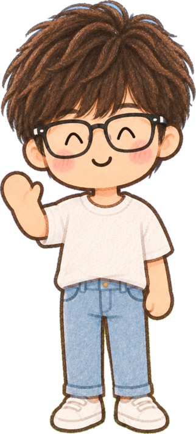

꿈을 향해뛰는 너에게
손흥민 · 박지성 · 메시에게 배우는 다섯 가지 태도


서영샘친구는 잘하는데, 나는 왜 안 될까?
정주샘선생님은… 줄넘기 할 때마다요.
오늘 얻을 것
꿈을 향해 가는 태도 다섯 가지
1
작은 기본
쉬워 보여도 꼭 필요한 연습
2
모르면 묻기
아는 척 대신 질문
3
함께 잘하기
팀에 필요한 일 찾기
4
다시 해 보기
한 번 졌다고 끝이 아니야
5
좋아하는 마음
즐거움 지키기
나에게 가장 필요한 태도 하나를 눌러 보세요 · 문제 4개가 기다려요!
축구그림악기공부아직 찾는 중

서영샘축구가 꿈이 아니어도 괜찮아요!
10
1손흥민 · 작은 기본부터
문제 1손흥민 선수는 무슨 발잡이일까요?
①오른발②왼발③양발
원하는 곳으로공을 정확하게 보내기
발 앞에 딱공을 멈춰 세우기
멋진 골오른발로도, 왼발로도
몸 놀이! 일어나서 양발 번갈아 콩콩 10번시작
서영샘음… 오른발? 아니, 왼발?
정주샘눌러서 맞혀 보세요!
2손흥민 · 모르면 묻는 용기
열여섯 살독일 함부르크 팀으로
독일어 0첫해가 정말 힘들었대요
문제 2독일어를 익힐 때 본 만화는?
①뽀로로②네모바지 스폰지밥③짱구
"여기부터 잘 모르겠어요.""나도 알려 줄래?""고마워!"
서영샘선생님은 그냥 재미있어서 보시잖아요.
정주샘…들켰네요.
3박지성 · 나도 잘하고, 함께도 잘하기
문제 3감독이 박지성 선수에게 맡긴 일은?
①골 많이 넣기②피를로 막기③물병 나르기
4 : 0 승리박지성도 한 골피를로의 책 속 칭찬
서영샘셋은 아니겠죠?
4메시 · 한 번 졌다고 끝이 아니야
O·X메시가 있는 팀은 절대 지지 않는다?
OX
1 : 2첫 경기 패배2022 월드컵
다음 경기멈추지 않고 이어 가기
?그다음은? 눌러 보기우승!주장 메시가 우승컵을
"어느 부분이 어려웠지?""다음엔 뭘 다르게 해 볼까?"
서영샘에이, 메시인데요? …오?
정주샘그다음은 어떻게 됐을까요?
5
오늘의 작은 약속
나는 언제한 뒤에,무엇을 해 볼 거예요.
"축구 연습이 끝나면, 어려웠던 동작을 선생님께 물어볼 거예요."
"그림을 다 그리고 나면, 마음에 드는 부분 하나를 찾아볼 거예요."
약속 예시 더 보기뽑기
정주샘다섯 가지 중에 딱 하나만!
서영샘5초 동안 마음속으로 완성해요.